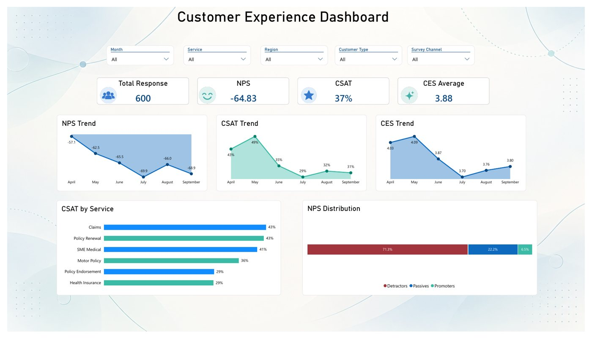
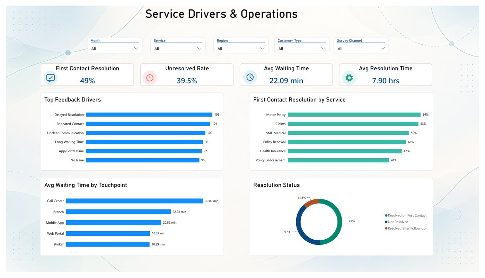

Data with a human perspective
Customer Experience
Dashboard.
A clearer view of customer sentiment, service performance, and the moments that need attention.

Behind every metric, a customer.
01 / Overview
From feedback
to a clearer picture.
A two-page dashboard bringing customer experience measures and operational service indicators into one reporting view.
The report combines NPS, CSAT, and CES with resolution, waiting time, and feedback drivers. Filters support exploration by month, service, region, customer type, and survey channel.
02 / The dashboard
Explore the report.

Experience Overview — sentiment, monthly trends, and service comparisons. Static report preview.
03 / What the report brings together
Three perspectives. One experience.
Customer sentiment
Listen.
Follow satisfaction, loyalty, and effort through CSAT, NPS, and CES trends.
Service performance
Understand.
Compare first-contact resolution, unresolved cases, and waiting time across services and touchpoints.
Feedback drivers
Prioritize.
Surface recurring concerns such as delayed resolution, repeated contact, and unclear communication.